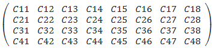

Main
Input data type
Set the data type of the block input. The data type of the input signal to the block must match this setting. Valid types are cint16, cint32, cfloat.
Output data type
Set the data type of the block output. Valid types are cint16, cint32, cfloat.
Filter coefficients data type
Set the filter coefficients data type. This parameter's setting may be restricted based on the Input/Output data type. In particular,
- Complex types are only supported when the Input/Output data type is also complex.
- 32-bit types are only supported when the Input/Output data type is also a 32-bit type.
- Filter coefficients data type must be an integer type if the Input/Output data type is an integer type.
- Filter coefficients data type must be a float type if the Input/Output data type is a float type.
Filter length
This field describes the number of taps (coefficients) in the filter.
Filter coefficients
This field specifies the filter coefficients.
Specify the coefficients as an NxM matrix, where N is the filter length and M is the number of TDM channels. For example, if filter length is 4 and number of TDM channels is 8 then the coefficient matrix would look like below:

Where each element Cnm represents a 'n-th' coefficient for a 'm-th' TDM channel.
Scale output down by 2^
Sets the power of 2 shift down applied to the accumulator of FIR before output. It must be in the range of 0 to 61 inclusive.
Rounding mode
Describes the selection of rounding to be applied during the shift down stage of processing.
The following modes are available:
- Floor: Truncate LSB, always round down (towards negative infinity).
- Ceiling: Always round up (towards positive infinity).
- Round to positive infinity: Round halfway towards positive infinity.
- Round to negative infinity: Round halfway towards negative infinity.
- Round symmetrical to infinity: Round halfway towards infinity (away from zero).
- Round symmetrical to zero: Round halfway towards zero (away from infinity).
- Round convergent to even: Round halfway towards nearest even number.
- Round convergent to odd: Round halfway towards nearest odd number.
No rounding is performed on the Floor or Ceiling modes. Other modes round to the nearest integer. They differ only in how they round for values that are exactly between two integers.
Input window size (Number of samples)
Describes the number of samples used as an input to the filter function. Because this is a single rate filter, the number of samples in the output window will match the size of the input window. This must be in the range of 4 to 8192 inclusive.
Number of TDM channels
Describes the number of Time-Division Multiplexed (TDM) channels processed by the FIR.
Saturation mode
Describes the selection of saturation to be applied during the shift down stage of processing.
The following modes are available:
- None: No saturation is performed and the value is truncated on the MSB side.
- Asymmetric: Rounds an n-bit signed value in the range
-2^(n-1)to2^(n-1)-1. - Symmetric: Rounds an n-bit signed value in the range
-2^(n-1)-1to2^(n-1)-1.
Number of cascade stages
This determines the number of kernels the FIR will be divided over to improve throughput. For example, a 32 tap FIR split over 4 cascaded kernels will result in each operating on 8 taps.
SSR
This parameter specifies the number of input (or output) paths and must be of the form 2N, where N is a non-negative integer. When a Super Sample Rate operation is used, then the input data channel must be split over multiple ports where each successive input sample is sent to a different input port in a round-robin fashion.
For example, for a input data stream that looks like: X = 1, 2, 3, 4, 5, 6, 7, 8, 9, ..., with an SSR parameter set to 2, input samples should be split over two ports accordingly:
In[1] = 1, 3, 5, 7, 9,... In[2] = 2, 4, 6, 8, 10,...
The output data will be produced in a similar method.